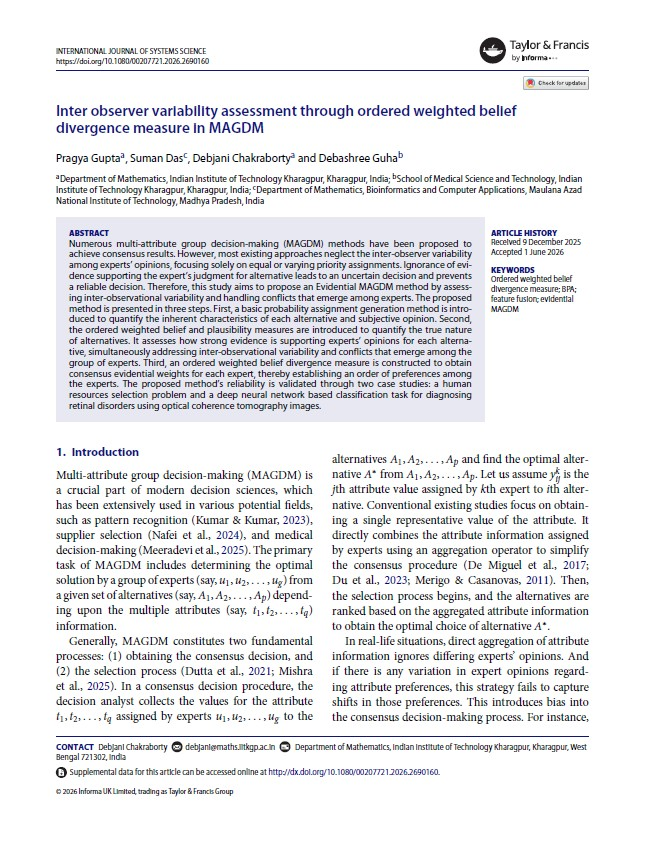
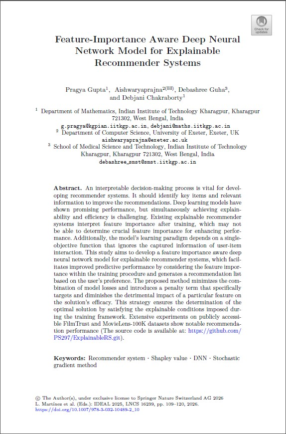
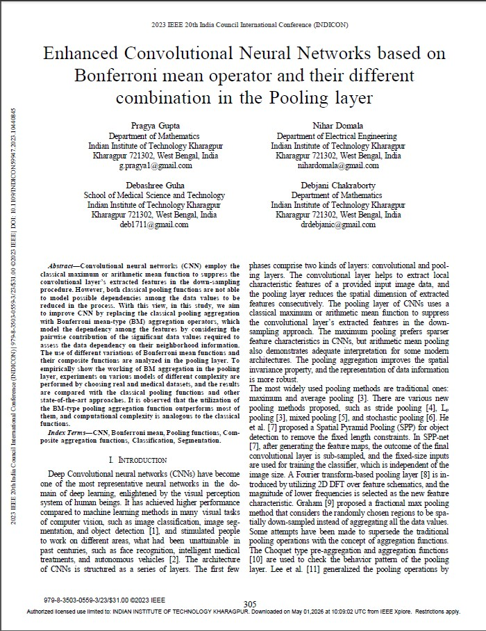
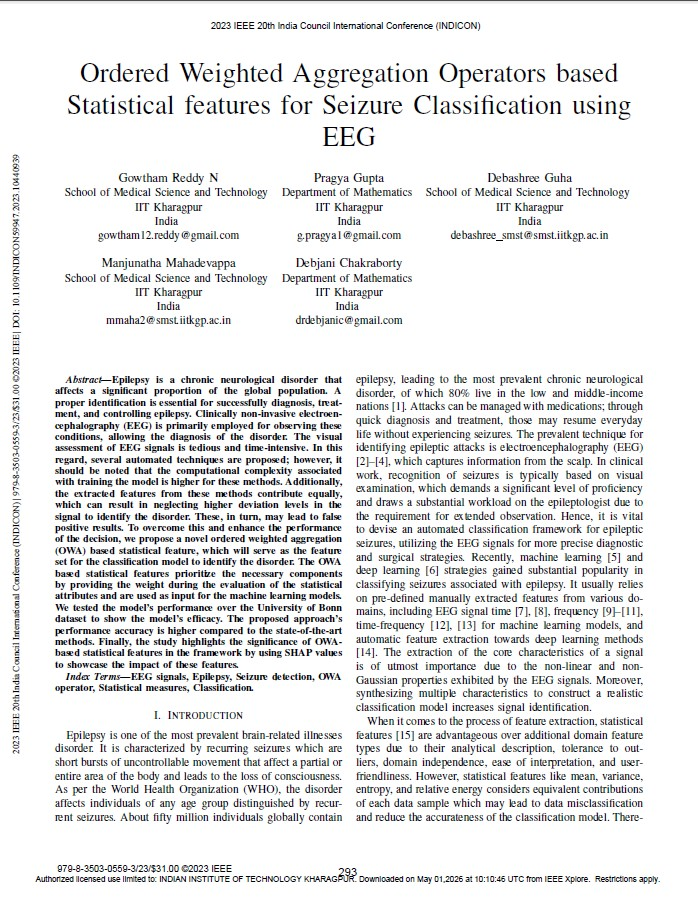
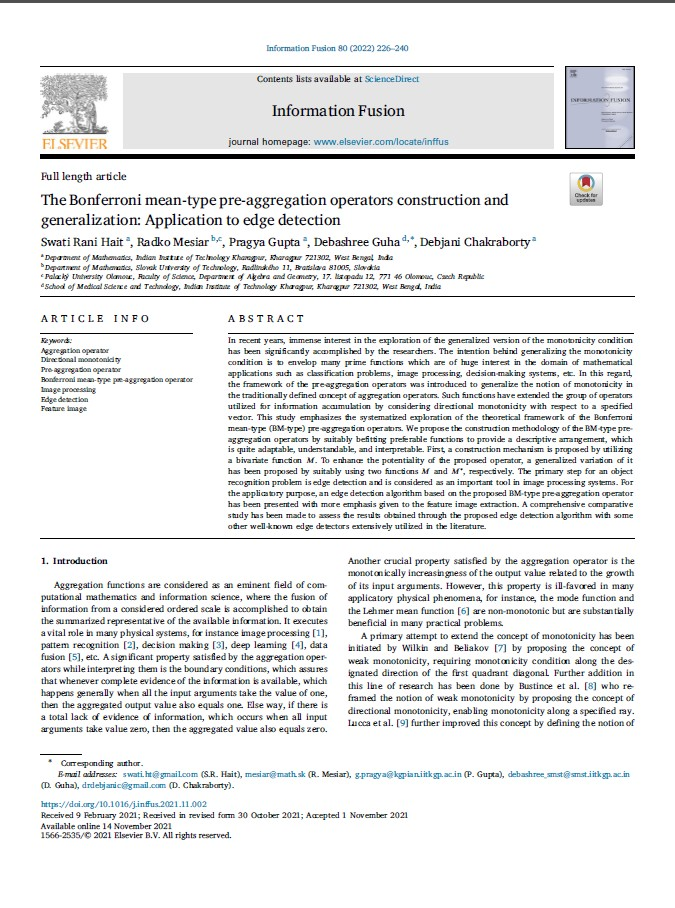

2026

Inter observer variability assessment through ordered weighted belief divergence measure in MAGDM
International Journal of Systems Science
Numerous multi-attribute group decision-making (MAGDM) methods have been proposed to
achieve consensus results. However, most existing approaches neglect the inter-observer variability
among experts’ opinions, focusing solely on equal or varying priority assignments. Ignorance of evidence
supporting the expert’s judgment for alternative leads to an uncertain decision and prevents
a reliable decision. Therefore, this study aims to propose an Evidential MAGDM method by assessing
inter-observational variability and handling conflicts that emerge among experts. The proposed
method is presented in three steps. First, a basic probability assignment generation method is introduced
to quantify the inherent characteristics of each alternative and subjective opinion. Second,
the ordered weighted belief and plausibility measures are introduced to quantify the true nature
of alternatives. It assesses how strong evidence is supporting experts’ opinions for each alternative,
simultaneously addressing inter-observational variability and conflicts that emerge among the
group of experts. Third, an ordered weighted belief divergence measure is constructed to obtain
consensus evidential weights for each expert, thereby establishing an order of preferences among
the experts. The proposed method’s reliability is validated through two case studies: a human
resources selection problem and a deep neural network based classification task for diagnosing
retinal disorders using optical coherence tomography images.
PDF
10.1080/00207721.2026.2690160
https://github.com/PS297/Evidential-MAGDM.git
Gupta, P., Das, S., Chakraborty, D., & Guha, D. (2026).
Inter observer variability assessment through ordered weighted belief divergence measure in MAGDM. International Journal of Systems Science, 1–24. https://doi.org/10.1080/00207721.2026.2690160
Ranking Feature Importance Objectives for Explainable Classification
IEEE Access
Recent studies on explainable machine learning models often analyze feature importance after training, but this results in a model that does not capture feature dependencies and requires extra computational resources for explainability. We propose a method for training a supervised learning model through multi-objective optimisation that considers accuracy and feature importance in a unified framework. This method provides an explainable training procedure that consistently minimises the model’s loss and maximises individual feature importance objectives, improving classification decision-making. We explore interpretable model training using many-objective and bi-objective optimisation formulations. Choosing an interpretable framework from these pathways is challenging, so we propose outranking them by constructing a credibility index based on performance metrics. Our experiments on the UCI repository and medical image datasets show the benefits of capturing feature importance early, ensuring intrinsic explainability.
PDF
10.1109/ACCESS.2026.3657343
https://github.com/PS297/MoEC.git
@ARTICLE{11363191,
author={Gupta, Pragya and Mondal, Sanchita and Aishwaryaprajna and Guha, Debashree and Chakraborty, Debjani},
journal={IEEE Access},
title={Ranking Feature Importance Objectives for Explainable Classification},
year={2026},
volume={14},
number={},
pages={21137-21147},
keywords={Training;Optimization;Indexes;Computational modeling;Mathematical models;Accuracy;Predictive models;Performance metrics;Feature extraction;Analytical models;Multi-criteria decision making;explainability;feature importance;Shapley value;outranking;classification},
doi={10.1109/ACCESS.2026.3657343}}
2025

Feature-Importance Aware Deep Neural Network Model for Explainable Recommender Systems
Intelligent Data Engineering and
Automated Learning (IDEAL 2025)
An interpretable decision-making process is vital for developing recommender systems. It should identify key items and relevant information to improve the recommendations. Deep learning models have shown promising performance, but simultaneously achieving explainability and efficiency is challenging. Existing explainable recommender systems interpret feature importance after training, which may not be able to determine crucial feature importance for enhancing performance. Additionally, the model’s learning paradigm depends on a single-objective function that ignores the captured information of user-item interaction. This study aims to develop a feature importance aware deep neural network model for explainable recommender systems, which facilitates improved predictive performance by considering the feature importance within the training procedure and generates a recommendation list based on the user’s preference. The proposed method minimizes the combination of model losses and introduces a penalty term that specifically targets and diminishes the detrimental impact of a particular feature on the solution’s efficacy. This strategy ensures the determination of the optimal solution by satisfying the explainable conditions imposed during the training framework. Extensive experiments on publicly accessible FilmTrust and MovieLens-100K datasets show notable recommendation performance.
PDF
10.1007/978-3-032-10489-2_10
https://github.com/PS297/ExplainableRS.git
@inproceedings{gupta2025feature,
title={Feature-Importance Aware Deep Neural Network Model for Explainable Recommender Systems},
author={Gupta, Pragya and Aishwaryaprajna and Guha, Debashree and Chakraborty, Debjani},
booktitle={International Conference on Intelligent Data Engineering and Automated Learning},
pages={109--120},
year={2025},
organization={Springer}
}

Bonferroni Mean Pre-aggregation Operator Assisted Dynamic Fuzzy Histogram Equalization for Retinal Vascular Segmentation
IEEE Journal of Biomedical and Health Informatics
Vasculature feature segmentation from the fundus images is critical for the identification of retinal diseases. However, automated vessel segmentation is challenging owing to variability in vessel structure and color gradients, low contrast between vessels, and pathologies. The state-of-the-art approaches address the challenges of emerging hand-crafted filters to apprehend vessel-like patterns. More recently, deep learning-based methods have evolved for the vessel segmentation task, which employs annotations to train the model. These approaches ignore the vessel’s geometrical characteristics in the fundus images, leading to inaccuracies. Herein, we propose a novel unsupervised segmentation method based on interrelationship handling, Bonferroni mean pre-aggregation operator, with the aid of dynamic fuzzy histogram equalization, namely BMPDFHESeg. The method extracts the vascular information by fusing color channels by constructing an interrelationship handling pre-aggregation operator. The operator enables finding the direction of increasingness to segment large vessels and vessel feature enhancement through a dynamic fuzzy histogram equalization process using the prior feature intensity information. BMPDFHESeg is assessed qualitatively and quantitatively using the DRIVE, STARE, and HRF datasets, demonstrating enhanced efficacy and computational speed. Further, the results were validated by ophthalmologists for the accuracy of the vessel segmentation and usefulness for the diagnosis of retinal disorders.
PDF
10.1109/JBHI.2025.3615462
https://github.com/PS297/BMPDFHESeg.git
@ARTICLE{11184550,
author={Gupta, Pragya and Hait, Swati Rani and Raval, Vishal and Mandal, Subhamoy and Guha, Debashree and Chakraborty, Debjani},
journal={IEEE Journal of Biomedical and Health Informatics},
title={Bonferroni Mean Pre-aggregation Operator Assisted Dynamic Fuzzy Histogram Equalization for Retinal Vascular Segmentation},
year={2026},
volume={30},
number={1},
pages={425-435},
doi={10.1109/JBHI.2025.3615462}}
2024

Multiscale Color Guided Attention Ensemble Classifier for Age-Related Macular Degeneration Using Concurrent Fundus and Optical Coherence Tomography Images
International Conference on Pattern Recognition (ICPR 2024)
Automatic diagnosis techniques have evolved to identify age-related macular degeneration (AMD) by employing single modality Fundus images or optical coherence tomography (OCT). To classify ocular diseases, Fundus and OCT images are the most crucial imaging modalities used in the clinical setting. Most deep learning-based techniques are established on a single imaging modality, which contemplates the ocular disorders to a specific extent and disregards other modality that comprises exhaustive information among distinct imaging modalities. This paper proposes a modality-specific multiscale color space embedding integrated with the attention mechanism based on transfer learning for classification (MCGAEc), which can efficiently extract the distinct modality information at various scales using the distinct color spaces. In this work, we first introduce the modality-specific multiscale color space encoder model, which includes diverse feature representations by integrating distinct characteristic color spaces on a multiscale into a unified framework. The extracted features from the prior encoder module are incorporated with the attention mechanism to extract the global features representation, which is integrated with the prior extracted features and transferred to the random forest classifier for the classification of AMD. To analyze the performance of the proposed MCGAEc method, a publicly available multi-modality dataset from Project Macula for AMD is utilized and compared with the existing models.
PDF
10.1007/978-3-031-78166-7_20
@inproceedings{gupta2024multiscale,
title={Multiscale Color Guided Attention Ensemble Classifier for Age-Related Macular Degeneration Using Concurrent Fundus and Optical Coherence Tomography Images},
author={Gupta, Pragya and Mandal, Subhamoy and Guha, Debashree and Chakraborty, Debjani},
booktitle={International Conference on Pattern Recognition},
pages={304--319},
year={2024},
organization={Springer}
}
2023

Enhanced Convolutional Neural Networks based on Bonferroni mean operator and their different combination in the Pooling layer
2023 IEEE 20th India Council International Conference (INDICON)
Convolutional neural networks (CNN) employ the classical maximum or arithmetic mean function to suppress the convolutional layer’s extracted features in the down-sampling procedure. However, both classical pooling functions are not able to model possible dependencies among the data values to be reduced in the process. With this view, in this study, we aim to improve CNN by replacing the classical pooling aggregation with Bonferroni mean-type (BM) aggregation operators, which model the dependency among the features by considering the pairwise contribution of the significant data values required to assess the data dependency on their neighborhood information. The use of different variations of Bonferroni mean functions and their composite functions are analyzed in the pooling layer. To empirically show the working of BM aggregation in the pooling layer, experiments on various models of different complexity are performed by choosing real and medical datasets, and the results are compared with the classical pooling functions and other state-of-the-art approaches. It is observed that the utilization of the BM-type pooling aggregation function outperforms most of them, and computational complexity is analogous to the classical functions.
PDF
10.1109/INDICON59947.2023.10440845
@INPROCEEDINGS{10440845,
author={Gupta, Pragya and Domala, Nihar and Guha, Debashree and Chakraborty, Debjani},
booktitle={2023 IEEE 20th India Council International Conference (INDICON)},
title={Enhanced Convolutional Neural Networks based on Bonferroni mean operator and their different combination in the Pooling layer},
year={2023},
volume={},
number={},
pages={305-310},
doi={10.1109/INDICON59947.2023.10440845}}

Ordered Weighted Aggregation Operators based Statistical features for Seizure Classification using EEG
2023 IEEE 20th India Council International Conference (INDICON)
Epilepsy is a chronic neurological disorder that affects a significant proportion of the global population. A proper identification is essential for successfully diagnosis, treatment, and controlling epilepsy. Clinically non-invasive electroencephalography (EEG) is primarily employed for observing these conditions, allowing the diagnosis of the disorder. The visual assessment of EEG signals is tedious and time-intensive. In this regard, several automated techniques are proposed; however, it should be noted that the computational complexity associated with training the model is higher for these methods. Additionally, the extracted features from these methods contribute equally, which can result in neglecting higher deviation levels in the signal to identify the disorder. These, in turn, may lead to false positive results. To overcome this and enhance the performance of the decision, we propose a novel ordered weighted aggregation (OWA) based statistical feature, which will serve as the feature set for the classification model to identify the disorder. The OWA based statistical features prioritize the necessary components by providing the weight during the evaluation of the statistical attributes and are used as input for the machine learning models. We tested the model’s performance over the University of Bonn dataset to show the model’s efficacy. The proposed approach’s performance accuracy is higher compared to the state-of-the-art methods. Finally, the study highlights the significance of OWA-based statistical features in the framework by using SHAP values to showcase the impact of these features.
PDF
10.1109/INDICON59947.2023.10440939
@INPROCEEDINGS{10440939,
author={N, Gowtham Reddy and Gupta, Pragya and Guha, Debashree and Mahadevappa, Manjunatha and Chakraborty, Debjani},
booktitle={2023 IEEE 20th India Council International Conference (INDICON)},
title={Ordered Weighted Aggregation Operators based Statistical features for Seizure Classification using EEG},
year={2023},
volume={},
number={},
pages={293-298},
doi={10.1109/INDICON59947.2023.10440939}}
2022

The Bonferroni mean-type pre-aggregation operators construction and generalization: Application to edge detection
Information Fusion
In recent years, immense interest in the exploration of the generalized version of the monotonicity condition has been significantly accomplished by the researchers. The intention behind generalizing the monotonicity condition is to envelop many prime functions which are of huge interest in the domain of mathematical applications such as classification problems, image processing, decision-making systems, etc. In this regard, the framework of the pre-aggregation operators was introduced to generalize the notion of monotonicity in the traditionally defined concept of aggregation operators. Such functions have extended the group of operators utilized for information accumulation by considering directional monotonicity with respect to a specified vector. This study emphasizes the systematized exploration of the theoretical framework of the Bonferroni mean-type (BM-type) pre-aggregation operators. We propose the construction methodology of the BM-type pre-aggregation operators by suitably befitting preferable functions to provide a descriptive arrangement, which is quite adaptable, understandable, and interpretable. First, a construction mechanism is proposed by utilizing a bivariate function
. To enhance the potentiality of the proposed operator, a generalized variation of it has been proposed by suitably using two functions
and
, respectively. The primary step for an object recognition problem is edge detection and is considered as an important tool in image processing systems. For the applicatory purpose, an edge detection algorithm based on the proposed BM-type pre-aggregation operator has been presented with more emphasis given to the feature image extraction. A comprehensive comparative study has been made to assess the results obtained through the proposed edge detection algorithm with some other well-known edge detectors extensively utilized in the literature.
PDF
10.1016/j.inffus.2021.11.002
@article{hait2022bonferroni,
title={The Bonferroni mean-type pre-aggregation operators construction and generalization: Application to edge detection},
author={Hait, Swati Rani and Mesiar, Radko and Gupta, Pragya and Guha, Debashree and Chakraborty, Debjani},
journal={Information fusion},
volume={80},
pages={226--240},
year={2022},
publisher={Elsevier}
}